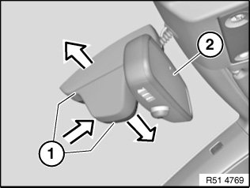
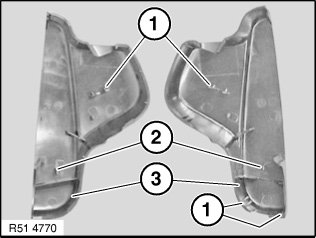
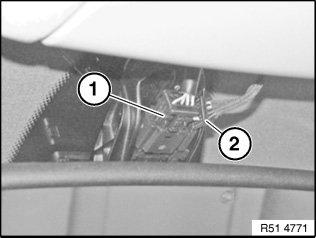
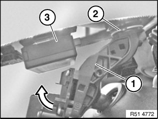

51 16 060 Removing and Installing/Replacing Interior Rearview Mirror (With Autobeam)
51 16 060 Removing and installing/replacing interior rearview mirror (with Autobeam)

IMPORTANT:
- Work may only be carried out at a room/object temperature of 18 ... 28 °C.
- If this cannot be guaranteed (cold/hot countries), it is necessary to equalize the temperature of the windscreen, mirror foot and rearview mirror (e.g. car left to stand indoors or in the shade for at least 30 minutes).

Version with remote control for central locking:
If necessary, disconnect negative lead from battery.
IMPORTANT: To avoid breaking windscreen:
- Snap out (press) rearview mirror only in direction of travel towards windscreen.
- Do not under any circumstances twist the mirror foot when removing.
- Twisting the mirror off the mirror mount will damage the rear catch.
- If the rear catch is damaged, the mirror will be loose when installed and must be replaced.

Press on end caps (1) and at same time pull them apart; this releases clip connection of both caps (1).
Twist mirror (2) and detach end caps (1) from mirror and feed out.

Installation:
Retaining hooks (1 and 2) of end caps (3) must not be damaged.

Disconnect plug connections (1 and 2).
Installation:
If necessary, pay attention to cable routing for rain sensor.

IMPORTANT:
- Risk of damage.
- Do not pull off rearview mirror (1) from windscreen against direction of travel and or snap out by turning.
- When snapping out, avoid damaging rain sensor (3).
Carefully press mirror (1) forwards out of mirror base (2).
If mirror (1) rests on rain sensor (3), snap mirror (1) out in inward direction.

Installation:
1. Twist mirror foot by approx. 45° and fit to mirror mount.
2. Turn mirror foot until it can be felt to engage on mirror base.
3. Visually inspect for positive locking.

NOTE:
- Normalization or initialization is not necessary.
- Autobeam is automatically aligned under the following conditions:
- Driving on a motorway/ordinary road at night for approx. 50 km and
- Clearly visible road markings
- In the event of a malfunction, observe notes and instructions on diagnosis.
- For further information on Autobeam, refer to SBT Autobeam.
Only replace with version with remote control for central locking:
If necessary, initialize all transmitters (ignition keys), refer to Owner's Handbook.
Only when replacing seat cover for with build date up to 09/2009:
Replace CAN plug (3-pin).
Remove existing plugs and dispose.
Plug in new plug part number 905 977 (sourcing reference BMW Parts department) similar to existing pins.